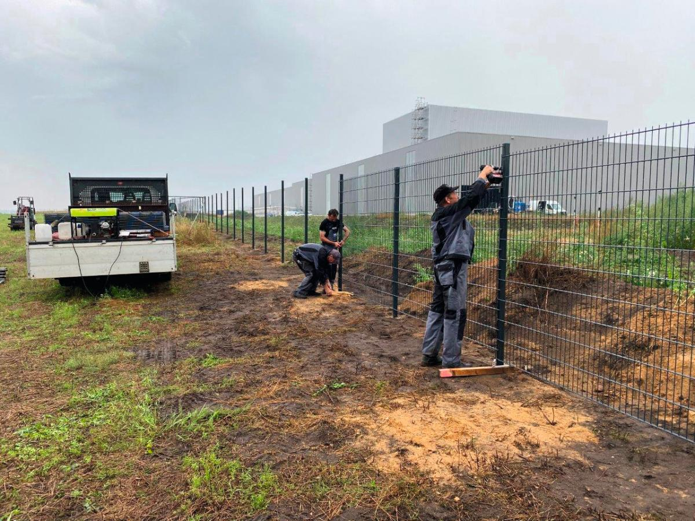
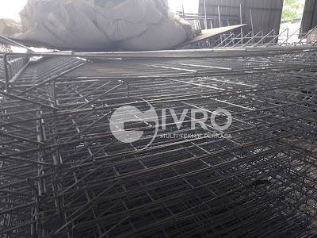
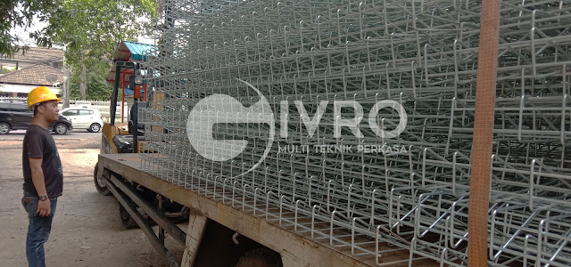
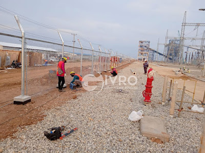
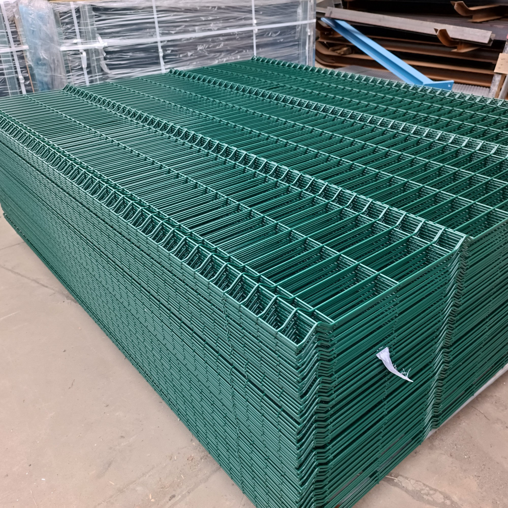
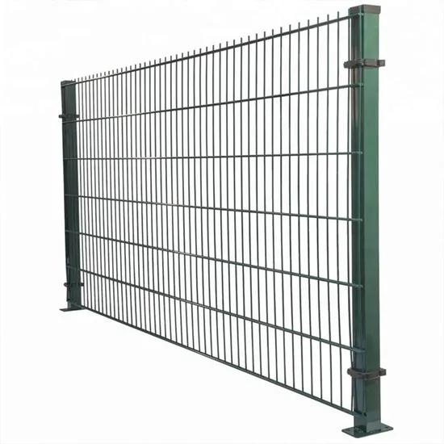
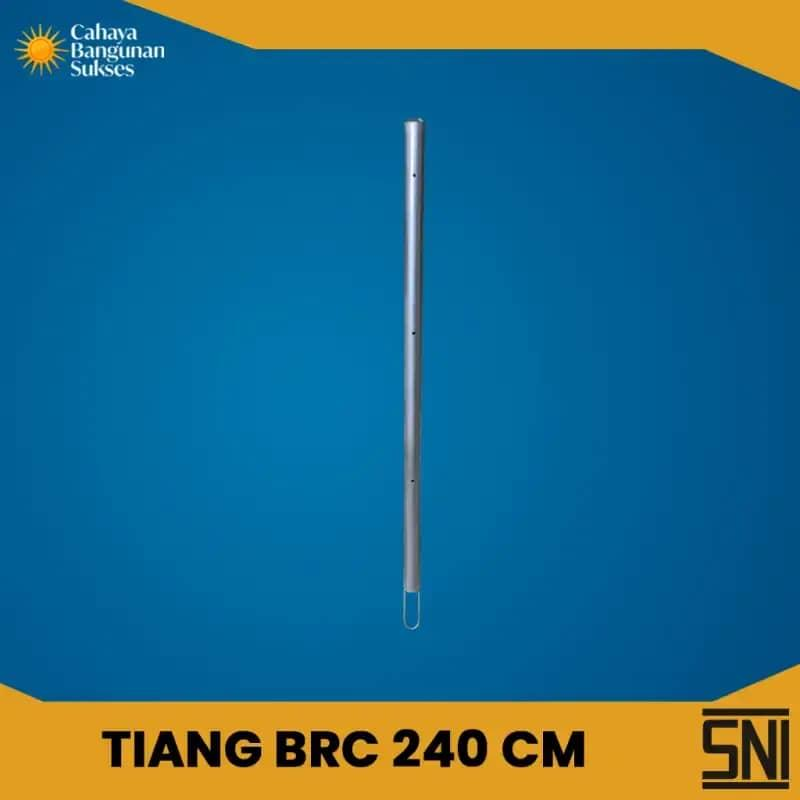
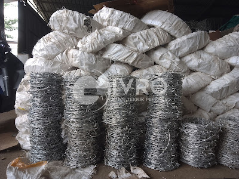
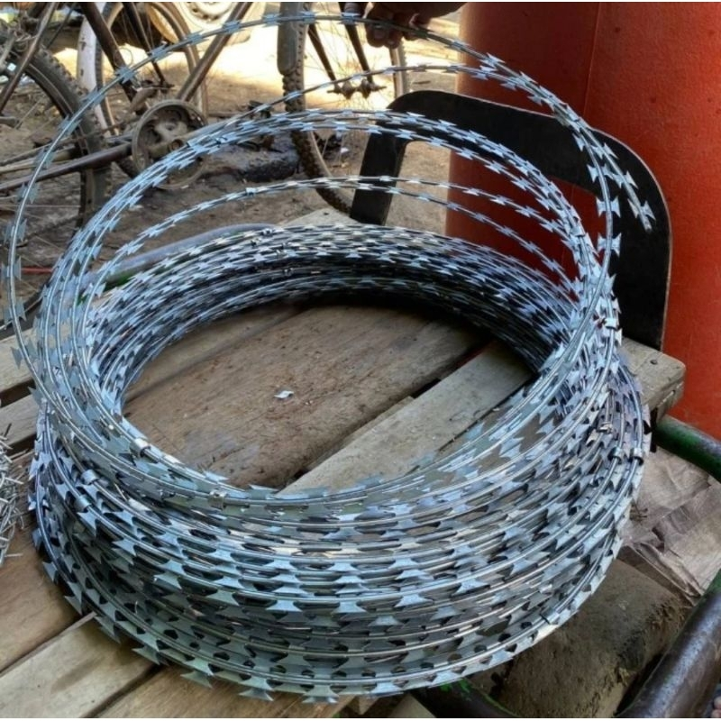

PT Givro Multi Teknik Perkasa adalah Pabrik Pagar BRC Indonesia yang berfokus kepada produksi kawat dan pagar BRC yang berstandar Nasional Indonesia.
Kami menyediakan berbagai produk pagar dan kawat untuk kebutuhan industri, kawasan, perumahan, infrastruktur dan berbagai kebutuhan lainnya.

Pagar BRC HDG (Hot Dip Galvanized) merupakan jenis pagar siap pasang yang diproduksi menggunakan material besi U-50 dan mendapatkan proses perlindungan galvanis untuk membantu meningkatkan ketahanan terhadap korosi.
Pagar BRC memiliki desain yang praktis, simpel dan minimalis sehingga cocok digunakan untuk berbagai kebutuhan pengamanan dan pembatas area.

Pagar BRC EP merupakan pagar BRC dengan proses finishing electroplating. Proses ini memberikan lapisan pelindung pada permukaan besi sehingga membantu meningkatkan ketahanan terhadap korosi.
Pagar BRC EP memiliki desain yang praktis, simpel dan minimalis sehingga cocok digunakan sebagai pagar dan pembatas untuk berbagai kebutuhan.

Pagar Kawat Harmonika merupakan salah satu jenis pagar berbahan kawat yang dibentuk menjadi pola anyaman berbentuk berlian. Produk ini dapat digunakan sebagai pembatas dan pengaman untuk berbagai kebutuhan.
Pagar Kawat Harmonika tersedia dalam berbagai pilihan ukuran dan jenis finishing, sehingga dapat disesuaikan dengan kebutuhan proyek, kawasan industri, fasilitas umum, maupun area lainnya.

Pagar Wiremesh 3D merupakan panel pagar berbahan kawat baja yang dibentuk dengan desain tiga dimensi untuk memberikan konstruksi yang kokoh serta tampilan yang modern.
Produk ini cocok digunakan sebagai pembatas dan pengaman berbagai area, seperti kawasan industri, fasilitas umum, perumahan, maupun area komersial.

Pagar Wiremesh 2D merupakan panel pagar berbahan kawat baja yang dirancang dengan konstruksi sederhana, kokoh, dan praktis untuk berbagai kebutuhan pembatas area.
Pagar Wiremesh 2D dapat digunakan untuk kebutuhan kawasan industri, perumahan, fasilitas umum, area komersial, dan berbagai kebutuhan proyek lainnya.

Tiang Pagar BRC merupakan komponen pendukung yang digunakan untuk memasang dan memperkuat panel Pagar BRC. Tiang ini dirancang agar pemasangan pagar dapat dilakukan dengan lebih praktis dan rapi.
Tiang Pagar BRC dapat digunakan bersama panel pagar BRC untuk berbagai kebutuhan pembatas dan pengamanan area.

Kawat Duri merupakan produk kawat yang digunakan sebagai pengaman tambahan pada area yang membutuhkan pembatasan dan perlindungan.
Dengan bentuk kawat yang dilengkapi duri pada bagian tertentu, produk ini dapat digunakan sebagai lapisan tambahan untuk membantu meningkatkan keamanan perimeter.

Kawat Silet merupakan kawat pengaman yang dilengkapi dengan bilah berbentuk silet pada bagian tertentu. Produk ini dapat digunakan sebagai pengamanan tambahan pada perimeter dan area yang membutuhkan pembatasan.
Kawat Silet dapat dipasang sebagai bagian dari sistem pengamanan pagar dan perimeter sesuai dengan kebutuhan proyek dan kondisi area.